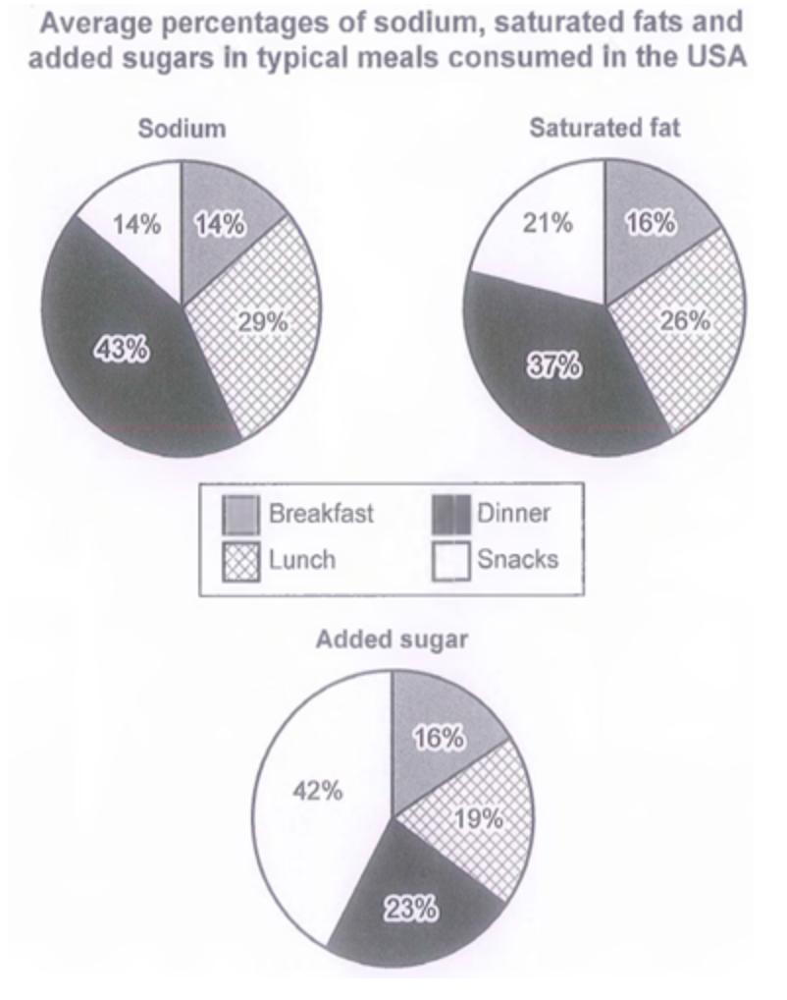

Task 1 — Nutrients in typical meals (pie)
Question. The charts below show the average percentages in typical meals of three types of nutrients, all of which may be unhealthy if eaten too much. Summarise the information by selecting and reporting the main features, and make comparisons where relevant.

The three pie charts illustrate the average proportions of three nutrients — sodium, saturated fats and added sugars — that people in the USA typically consume across breakfast, lunch, dinner and snacks.
Overall, dinner accounts for the largest share of sodium and saturated fats, whereas snacks contribute the highest proportion of added sugars. Breakfast, in contrast, is the smallest source of all three nutrients.
Looking at sodium and saturated fats, dinner is clearly the main contributor, accounting for 43% of sodium intake and 37% of saturated fats. Lunch follows with 29% and 26% respectively, while snacks provide 14% of sodium but a noticeably higher 21% of saturated fats. Breakfast is the smallest source for both, at 14% and 16%.
The pattern for added sugars is quite different. Snacks make up the largest share at 42%, almost twice the proportion of the next highest, dinner, at 23%. Lunch accounts for 19%, and breakfast for 16%. Notably, snacks contribute far more added sugar than sodium or saturated fat, suggesting that snack choices, rather than main meals, are the main driver of sugar consumption across the day.
TA：开头改写题目并明确指向三饼图；Overview 给出两条核心趋势（晚餐主导盐与饱和脂肪，零食主导添加糖），且每个数字均来自原图。
CC：四段式清晰，Body 1 与 Body 2 分别聚焦不同营养素，用"Looking at…/The pattern for… is quite different"自然过渡，避免机械连接词堆砌。LR：proportions / nutrients / contributor / respectively / noticeably 等均为 6 档话题词，未出现生僻或不当搭配。GRA：复合句（whereas / while / rather than）与被动信息结构搭配，错误率低，无可读性障碍。
nutrient— 营养素saturated fat— 饱和脂肪added sugar— 添加糖proportion / share / percentage— 占比contributor / source— 来源account for— 占（…比例）respectively— 分别noticeably / considerably— 显著地